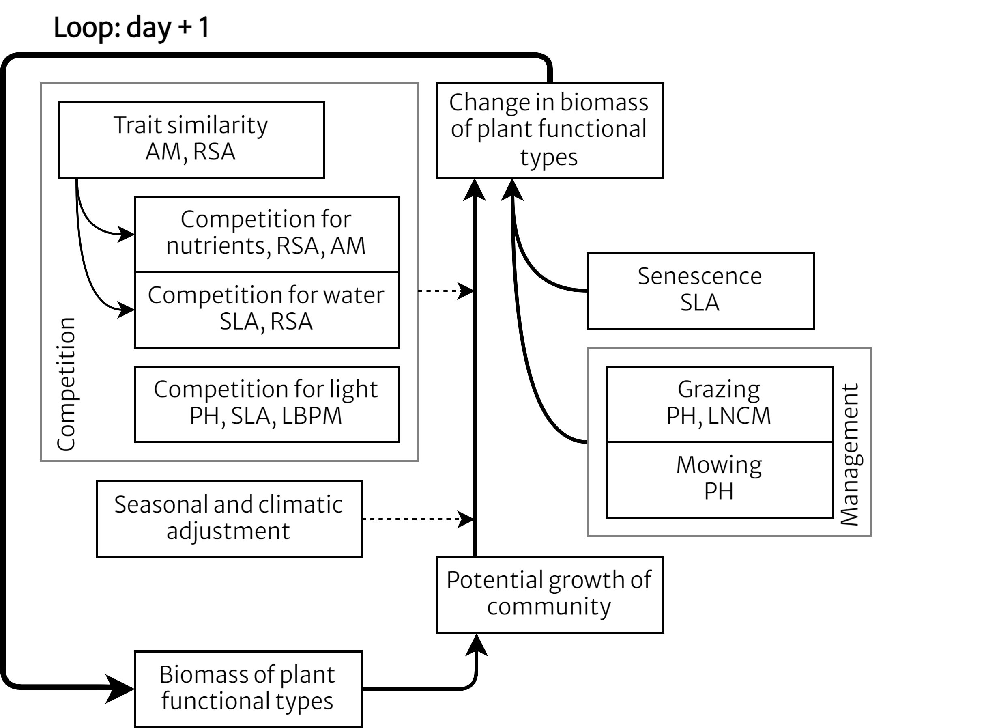

GrasslandTraitSim.jl


A Julia package for simulating grassland dynamics.
Author: Felix Nößler
Licence: GPL-3.0
Please refer to the documentation for more information about the grassland simulation model.
Here are slides from presentations that show concepts of the models:

Quick install
Launch Julia and type
import Pkg
Pkg.add(url="https://github.com/felixnoessler/GrasslandTraitSim.jl")Compatibility: The simulations were tested with
Julia1.10. I recommend using this version.
For more information on installing unregistered packages, see here. Here, you can browse the different versions of GrasslandTraitSim.jl: tags.
Run simulations
import GrasslandTraitSim as sim
trait_input = sim.input_traits();
nspecies = length(trait_input.amc)
input_obj = sim.validation_input(; plotID = "HEG01", nspecies);
p = sim.SimulationParameter();
sol = sim.solve_prob(; input_obj, p, trait_input);
sol.output.biomass